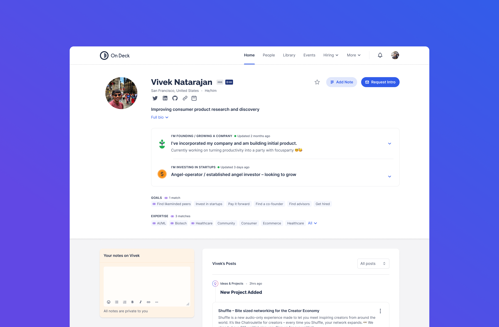
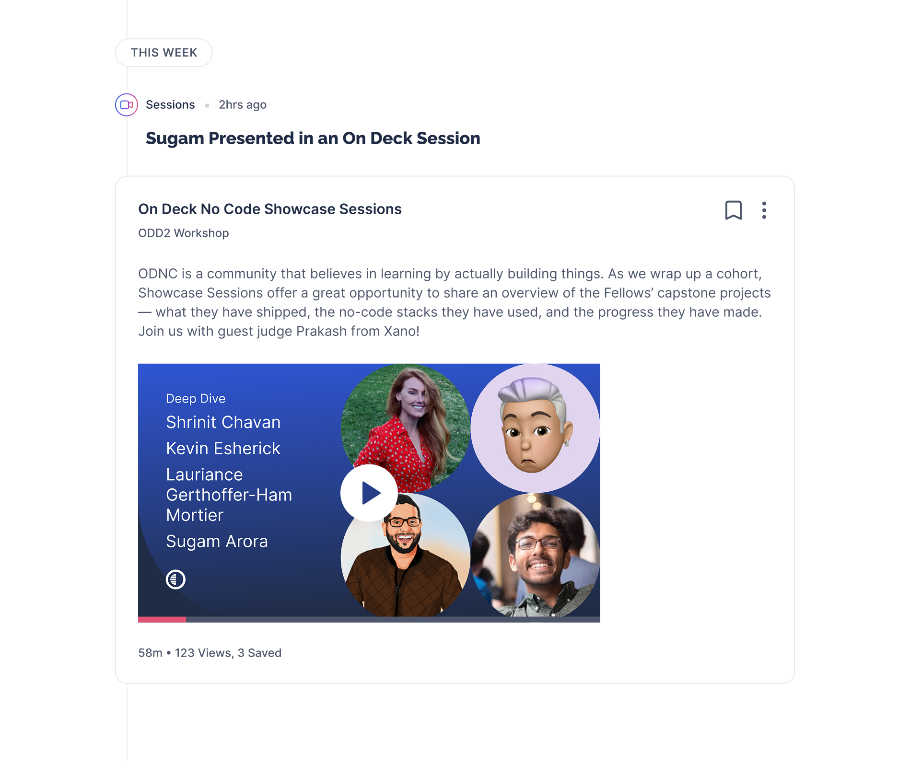
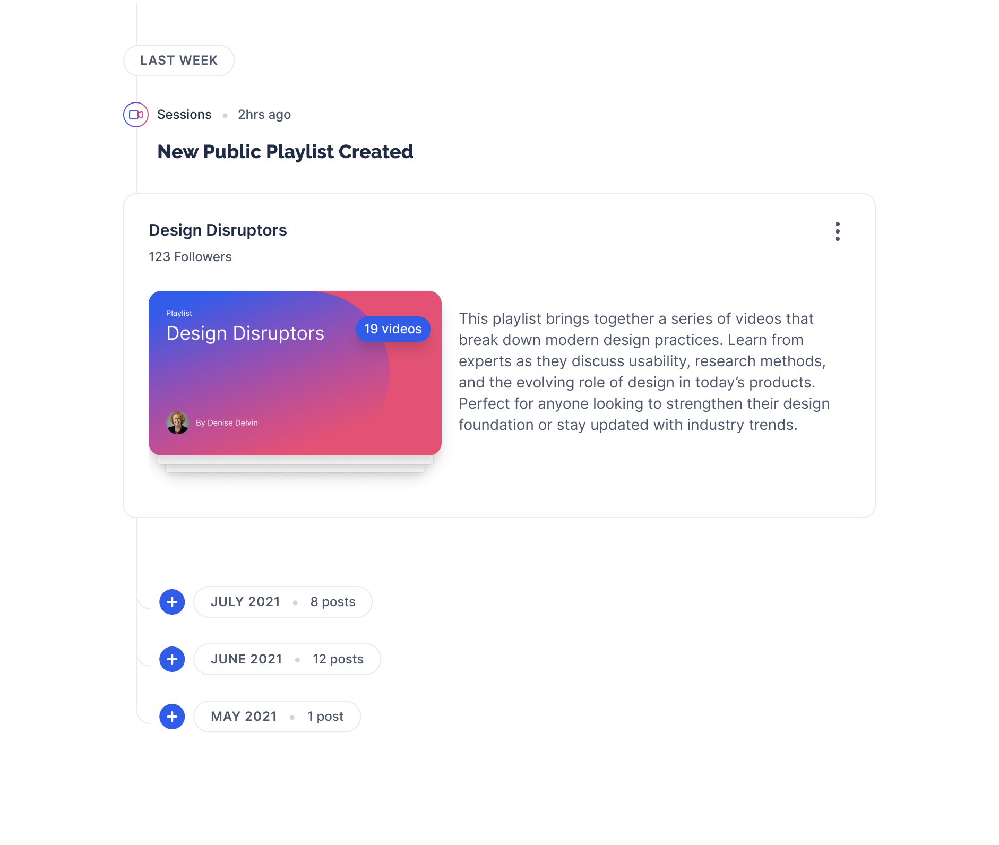

On Deck's entire value proposition rested on its community — the peer connections, introductions, and shared context that made membership worth having. As the platform scaled past 100,000 members, that value was at risk: outreach between members was declining, and the profile page — the primary mechanism for discovery and connection — had stopped doing its job.
I joined as Lead Product Designer in April 2021 and moved into a Product Design Manager role a year later, growing the design team from two to five as the company invested in solving the problem properly. What followed was one of the more complex projects of my time there: a full profile redesign and a segmented migration strategy to bring the entire user base onto the new data structure without breaking trust.
Engagement data from Mixpanel and in-person user interviews pointed to the same problem: the profile page had lost its utility. Users couldn't tell who was still active on the platform. That ambiguity eroded trust — if you can't gauge whether someone is likely to respond, you don't reach out.
The central addition was an activity feed. Surfacing a member's recent platform activity served as social proof of presence — a live signal that the profile was current and its owner was engaged. For the profile holder, it created a sense of ownership and investment in the page. For members browsing the community, it opened up a secondary entry point into content, sessions, and playlists.



A redesigned profile is only as good as the data behind it — rapid growth and multiple rounds of onboarding iteration had left the underlying data fragmented. Profiles held different fields and different depths depending on when a member had joined — some were rich and complete, others near-empty.
We developed a segmented upgrade flow based on three factors: the depth of information already held in a member's profile, their level of platform engagement, and how recently their profile had been updated. These three signals divided the user base into cohorts, each receiving a tailored experience — different outreach channels, different incentives, and a different set of steps to complete.


For highly engaged members with rich profiles, the ask was light: a short confirmation and a few additions. For members with sparse data and low engagement, the approach was softer — email outreach, gentler prompts, and clear framing around the value of a complete profile. A lot of the design work in this phase was sequencing and copywriting as much as it was UI.